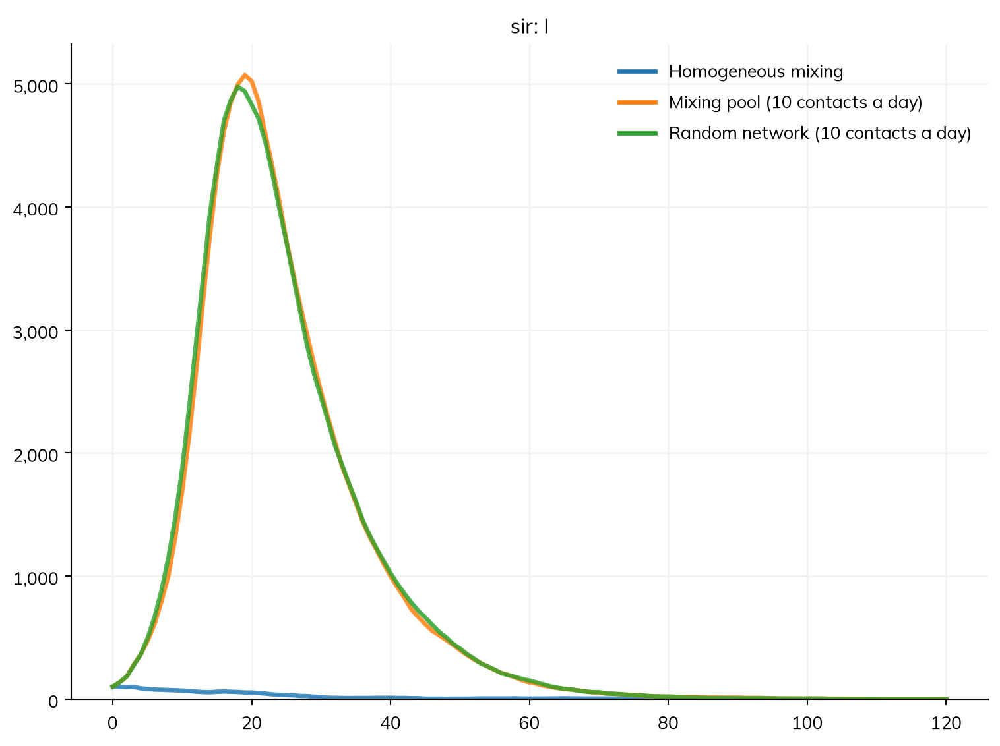
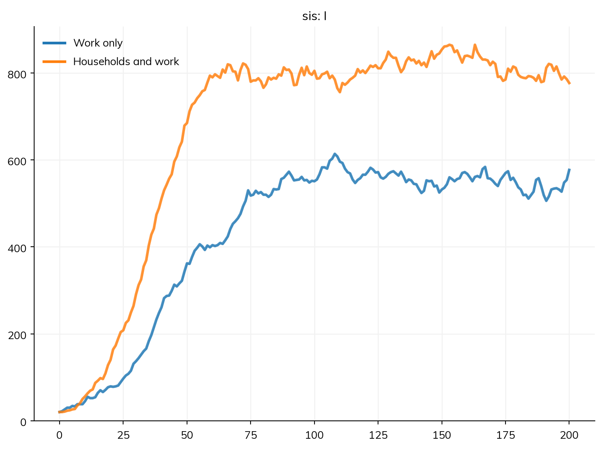
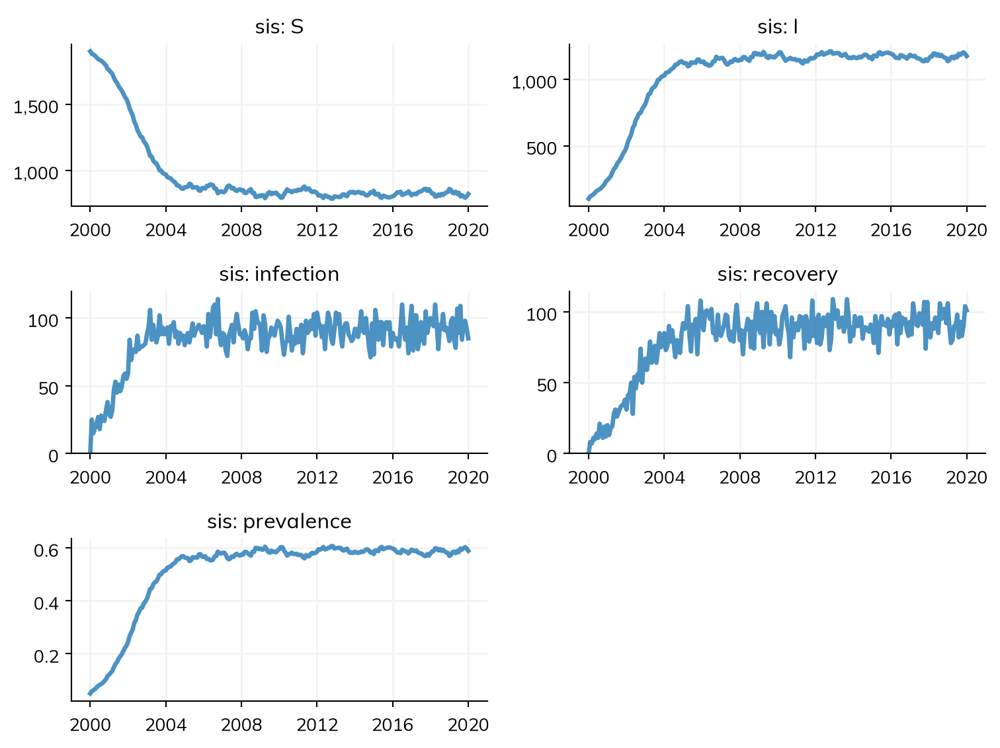
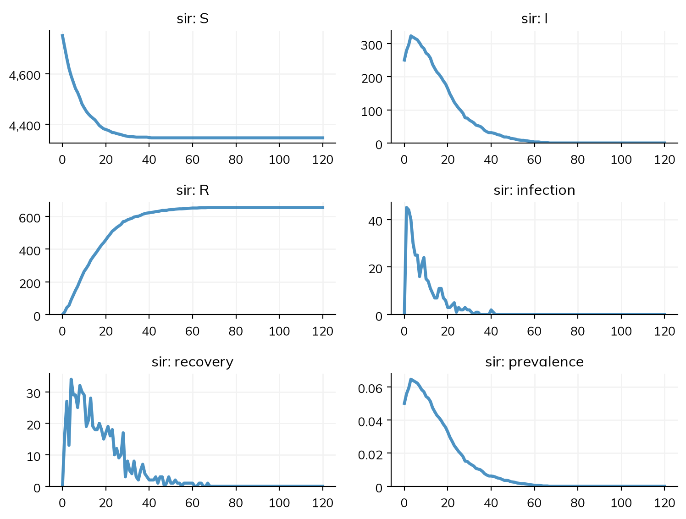

A disease model says how infectious people are; the mixing says who meets whom, and how often. This page covers the ways of giving the mixing in Starsim: homogeneous mixing, mixing pools, and networks of individual contacts (random, sexual, mother-to-child, and household networks). Contact matrices between groups, such as age groups, are in Population data, and several places with movement between them in Geography. The tutorial A2 – Networks builds up the same material as a single worked path, and T4 – Age groups and contacts uses a contact matrix in a compartmental model.
Choosing how people mix
The disease and the mixing are separate: changing from homogeneous mixing to a network does not change the disease. Each way of mixing is a route (a path by which infection can pass), given to the sim with networks=, which takes networks and mixing pools alike, singly or as a list:
No route given: homogeneous mixing, the assumption of the standard ODE models. Everyone is equally likely to meet everyone else, and the transmission rate β (beta) is a rate per unit time: in S >> I @ beta*I, each susceptible person is infected at a rate of β times the share of people who are infectious.
A mixing pool, ss.MixingPool(n_contacts=10): homogeneous mixing with 10 contacts per unit time. β is then the probability that a contact with an infectious person infects, so β × the number of contacts is the transmission rate.
A contact matrix, ss.contacts(...): mixing between groups, such as age groups, with a number of contacts for each pair of groups (see Population data).
A network, such as ss.RandomNet(n_contacts=10) or ss.SexualNet(): contacts between particular people, with β per contact (or per sex act, on a network with acts).
Here is the same disease under three kinds of mixing. With no route, β = 0.05 per day and an infectious period of 10 days give R0 = β × the infectious period = 0.5, so there is no epidemic. With 10 contacts a day, R0 = 0.05 × 10 × 10 = 5, and the mixing pool and the random network give nearly the same epidemic:
import starsim as ssimport starsim.library as sslS, I, R = ss.states('S I R')infection = S >> I @0.05*I # β = 0.05: per day with no route, per contact with onerecovery = I >> R @ ss.days(10) # Infectious for 10 days on averagesir = ss.Disease(infection, recovery, init_prev=0.01)kw =dict(n_agents=10_000, stop=ss.days(120), verbose=0)scenarios = {'Homogeneous mixing': ss.Sim(sir, **kw),'Mixing pool (10 contacts a day)': ss.Sim(sir, networks=ss.MixingPool(n_contacts=10), **kw),'Random network (10 contacts a day)': ss.Sim(sir, networks=ss.RandomNet(n_contacts=10), **kw),}msim = ss.parallel(scenarios)msim.plot('sir.I')

Transmission along every route is frequency-dependent: a person’s number of contacts is fixed, and what matters is the share of them who are infectious. This is the usual assumption for infections passed directly between people. A density-dependent rate, which grows with the number of people infected rather than their share, is written with the count itself, S >> I @ ss.perday(3e-5)*I.n (see Diseases).
Which solver runs it
A model whose mixing has a compartmental form (no route, a mixing pool, or a contact matrix) runs as an ODE unless it is given agents, as the first and second sims above would without n_agents. A network is about particular people, so a model with a network runs as agents. A compartmental solver can still be asked for (solver='ode'); it then approximates the network, and says so in one line:
Route
As agents
As compartments
none given
exact
exact
ss.MixingPool(n_contacts=c)
exact
exact
ss.MixingPools(...), ss.contacts(...)
exact
exact
ss.RandomNet(n_contacts=c)
exact
homogeneous mixing with c contacts per unit time
ssl.StaticNet(graph=...)
exact
homogeneous mixing with the graph’s mean number of contacts
the partner-change model (partnerships formed at a rate, each with the chance it transmits over its whole length), which needs the model stratified by sex for ss.SexualNet
The approximations are rough where the network matters most: homogeneous mixing with the same mean number of contacts loses the variation between people, and the partner-change model counts at most one transmission in each partnership. Solvers and backends has the details. Anything that needs to know who a person’s contacts are (contact tracing, partner notification, the transmission tree) needs a network, and so agents.
Random networks
ss.RandomNet pairs people at random, with n_contacts contacts per person (a number, or a distribution such as ss.poisson(lam=5)). By default the contacts are redrawn every step. dur= makes them last, dynamic=False makes them once at the start and keeps them (people born or added later get none), and age_range=[20, 65] restricts the network to people of those ages. Several networks can be given together, each with its own name, as a layered population: here contacts at home (fully connected households of about three people, ssl.ClusterNet) and contacts at work among adults:
households = ssl.ClusterNet(name='households', cluster_size=ss.poisson(3))work = ss.RandomNet(name='work', n_contacts=10, age_range=[20, 65], dynamic=False)S, I = ss.states('S I')infection = S >> I @0.02*I # Per contact, per dayrecovery = I >> S @ ss.days(10) # No lasting immunitysis = ss.Disease(infection, recovery, init_prev=0.01)def make_sim(networks):return ss.Sim(sis, networks=networks, n_agents=2000, stop=ss.days(200), verbose=0)msim = ss.parallel({'Work only': make_sim(work), 'Households and work': make_sim([households, work])})msim.plot('sis.I')print('Number of households:', msim.sims[1].networks.households.n_clusters)

Number of households: 669
Adding households raises the number infected at the endemic level: they reach children and older people, who have no contacts at work, and give each person a few more contacts. Each network’s transmission is counted separately, so the same β applies on every layer unless it is given by route (see below).
ssl.HybridNet gives the four layers of Covasim in one: households (h), schools (s), and workplaces (w), each a ssl.ClusterNet limited by age where it should be, and the community (c), a random network. Once in a sim, it becomes four networks, each reached (and changed) on its own, e.g. sim.networks.s; a dt, start, or stop given to it is passed to all four:
hybrid = ss.Sim(sis, networks=ssl.HybridNet(household_size=3), n_agents=2000, stop=ss.days(100), verbose=0)hybrid.run()for net in hybrid.networks():print(net.label, 'edges:', len(net))
ss.SexualNet is a network of partnerships between two groups of people: by default a man and a woman, or two men (between='mm'), or any two groups by name, such as female sex workers and their clients (between=('fsw', 'client')). A partnership lasts dur, and has acts sex acts per unit time. Partnerships and acts are separate numbers, with separate sources of data (numbers of partners from surveys, how long partnerships last, how often partners have sex), so that a probability of transmission per act means what it says.
By default, people with no partner are paired on every step, so nobody has more than one partner at a time. With n_contacts=, the mean number of partners at a time is a target instead, and so are concurrency= (the share with two or more), max_contacts=, and match= (the share of partnerships between people at the same level of a property, e.g. match=dict(risk=0.8)). People then look for partners at the rates that make those targets the network’s stable state. net.check() runs the sim again (three times by default) and compares the network it makes with each target:
ss.SexualNet is ss.DegreeNet between men and women, with an age of debut and participation. Partnerships that are not sexual, such as needle sharing among people who inject drugs, are ss.DegreeNet itself, which takes the same targets among anyone (or the people that where= gives, or between two groups with between=), with a target of one partner each by default.
Transmission that differs by route
Infectiousness belongs to the disease, and contact to the routes, but how infectious someone is can itself depend on the route: HIV passes far more readily through a shared needle than through sex, and more readily from men to women than the reverse. The disease then gives one β for each route, as a dict keyed by the route’s name (the network’s class in lowercase, unless it was given a name=). On a network with directions, β takes a value for each: ss.peract(m2f=..., f2m=...) is a probability per act from men to women and from women to men. Every route needs a value, so that none is left out by mistake.
Here an infection passes through a random network of social contacts and through a sexual network:
S, I = ss.states('S I')beta =dict(randomnet=ss.peryear(0.2), sexualnet=ss.peract(m2f=0.01, f2m=0.005))infection = S >> I @ beta*Irecovery = I >> S @ ss.years(1)sis = ss.Disease(infection, recovery, init_prev=0.05)sim = ss.Sim(sis, networks=[ss.RandomNet(), ss.SexualNet()], n_agents=2000, start=2000, stop=2020, dt=ss.months(1), verbose=0)sim.run()sim.plot('sis')

Mother-to-child networks
Transmission from mother to child needs pregnancy (ss.Pregnancy), which adds and removes the edges between mother and child: ss.PrenatalNet while the child is in the womb, ss.BreastfeedingNet while the mother breastfeeds, and ss.PostnatalNet for a period after birth (dur=). Their direction is one way, from mother to child. Here a chronic infection (one with no recovery) passes through partnerships and to children before birth, with β a probability per contact on the prenatal network:
S, I = ss.states('S I')beta =dict(sexualnet=ss.peract(m2f=0.01, f2m=0.005), prenatalnet=0.3)infection = S >> I @ beta*Ichronic = ss.Disease(infection, init_prev=0.1)pregnancy = ss.Pregnancy(fertility_rate=ss.freqperyear(100)) # Births a year per 1,000 womendeaths = ss.Deaths(death_rate=ss.peryear(0.01))sim = ss.Sim(chronic, networks=[ss.SexualNet(), ss.PrenatalNet()], demographics=[pregnancy, deaths], n_agents=2000, start=2000, stop=2020, dt=ss.months(1), verbose=0)sim.run()sim.plot('chronic')
A mixing pool is homogeneous mixing among a group of people: no individual contacts, but each person has an effective number of contacts in the pool (n_contacts: a number is the same for everyone, and a distribution is drawn once for each person and kept for the whole run). With no groups, a pool is everyone, as in the first example on this page. src= and dst= restrict it to the people who can infect (the sources) and the people who can be infected (the destinations), so a pool can be one-way. Each is a condition on people, a function of the sim returning a boolean array or UIDs, or ss.AgeGroup(low, high), which works out who is in an age group once for each step and so is faster when there are many pools:
pool = ss.MixingPool( src = ss.AgeGroup(low=0, high=15), # Children infect ... dst = ss.AgeGroup(low=15, high=None), # ... adults, but not each other n_contacts = ss.poisson(lam=5), # 5 contacts a day on average)S, I, R = ss.states('S I R')infection = S >> I @0.05*Irecovery = I >> R @ ss.days(10)sir = ss.Disease(infection, recovery, init_prev=0.05)sim = ss.Sim(sir, networks=pool, n_agents=5000, stop=ss.days(120), verbose=0)sim.run()sim.plot('sir')

On each step, the force of infection in the pool is the mean infectiousness of the sources (the share of them infectious, weighted by each one’s rel_trans), and each susceptible destination has a hazard of β × that mean × their number of contacts × their rel_sus, so is infected in the step with probability 1 − exp(−hazard × dt). This is the term β × S × I/N of the ODE, applied to each person.
Of the 5,000 people, 250 start infected, and the epidemic goes no further than the adults whom children infect: it dies out once the infected children recover, since nobody infects children in this pool and adults infect nobody. ss.MixingPools (plural) is a set of pools between groups, with src and dst as dicts of groups and n_contacts as a matrix, sources by row and destinations by column. A matrix of numbers is much faster than one of distributions, which needs a pool for each pair of groups and a draw for each pair for each person born; to have the number of contacts differ between people, use a distribution, e.g. ss.poisson(lam=2), in the matrix. For mixing by age, the usual case, ss.contacts() makes the ss.MixingPools from a contact matrix and a stratified model gives results by group: see Population data.
In a declared disease, β belongs to the transmission, not to the pool: a pool’s own beta must be left at its default of 1, and any other value raises an error that says to give it to the transmission instead (e.g. dict(mixingpool=...)).
Working with edges
A network keeps its edges as arrays: p1 (the first person in each edge), p2 (the second), and beta (a multiplier for each edge, 1 by default), reached as net.edges or as net['p1']. net.find_contacts(uids) gives the contacts of some people, net.to_df() the edges as a table, and net.remove_edges() removes edges by index or by a boolean array. A network can also be made from a table of edges with from_df():
sim = ss.Sim(n_agents=1000, networks=ss.RandomNet(n_contacts=4), stop=ss.days(10), verbose=0)sim.run()net = sim.networks.randomnetprint('Edges:', len(net))print('Contacts of person 0:', net.find_contacts([0]))custom = ss.Network(name='custom').from_df(dict(p1=[0, 1, 2], p2=[1, 2, 3]))custom.to_df()
Edges: 2000
Contacts of person 0: [143 265 720 769 951]
p1
p2
beta
0
0
1
1.0
1
1
2
1.0
2
2
3
1.0
Edges can be removed by a condition on them or by position, and net.eligible() gives the people who can form edges (alive, and within an age range if given), here on the community layer of the hybrid network above:
net = hybrid.networks.cprint('Community edges:', len(net))net.remove_edges(net['p1'] <100) # Remove the edges whose first person has a UID below 100net.remove_edges([0, 1, 2]) # Remove the first three edgesprint('After removing some:', len(net))print('People of school age:', net.eligible(age_range=[6, 22]).sum())
Community edges: 19868
After removing some: 18840
People of school age: 543
Changing the edges of a network in the middle of a run is the job of an intervention (see Interventions), such as closing schools; the edges of a network that is redrawn each step come back on the next step.
A network of partnerships forgets a partnership when it ends. With memory=, it keeps those that ended within that time, so that net.find_contacts(), and so contact tracing (the trace= of a delivery: see Interventions), also reaches recent past partners, as for partner notification of the past year’s partners:
net = ss.SexualNet(dur=ss.lognorm_ex(mean=ss.years(1), std=ss.years(1)), memory=ss.years(1))sim = ss.Sim(n_agents=2000, networks=net, start=2000, stop=2005, dt=ss.months(1), verbose=0)sim.run()net = sim.networks.sexualnetuids = ss.uids(range(200))print('Current partners of 200 people:', len(ss.Network.find_contacts(net, uids)))print('Including those of the past year:', len(net.find_contacts(uids)))
Current partners of 200 people: 126
Including those of the past year: 217
People in real places, with contacts falling off with distance
places, local, c, n_contacts
ssl.GridNet
People on a square grid
diagonal, periodic
ssl.SmallWorldNet, ssl.ScaleFreeNet
The classic small-world and scale-free graphs
k, p; m
ssl.DiskNet
People who move in a plane, in contact within a radius
r, v
ssl.NullNet
No contacts, for testing
none
Writing a network
A network written as code is a subclass of one of these (usually ss.DynamicNetwork, for partnerships that form and end, or ss.SexualNet) that overrides how edges are made. The methods it can override:
Method
What it does
add_pairs()
Makes new edges; the main method to override
remove_pairs()
Ends edges, e.g. those whose duration is over
step()
Called every step; by default removes, then adds, pairs
init_post()
Sets the network up once the people exist
find_contacts()
Gives the contacts of some people
Custom modules has the general pattern, including parameters, states, and results of a module’s own, and the tutorial A5 – Custom modules writes a network step by step.
Pitfalls
β changes meaning when a route is added. With no route, β is a rate per unit time; with a mixing pool, contact matrix, or network, it is a probability per contact (per act, on a network with acts). Adding networks=ss.RandomNet(n_contacts=10) to a model fitted with homogeneous mixing multiplies its R0 by 10, as in the first example on this page.
A network makes the model agent-based. Asking for solver='ode' with a network approximates it; check the note it prints, and Solvers and backends for how far the approximation goes.
A probability per act needs acts.ss.peract() on a route without acts (a random network, a mixing pool, a mother-to-child network) raises an error; give a bare probability per contact instead.
A β by route names every route. A dict that leaves out a route, or names one that isn’t in the sim, raises an error that lists the routes there are.
A static network leaves out newcomers. With dynamic=False, edges are made once, and people born or added later have no contacts on that network.